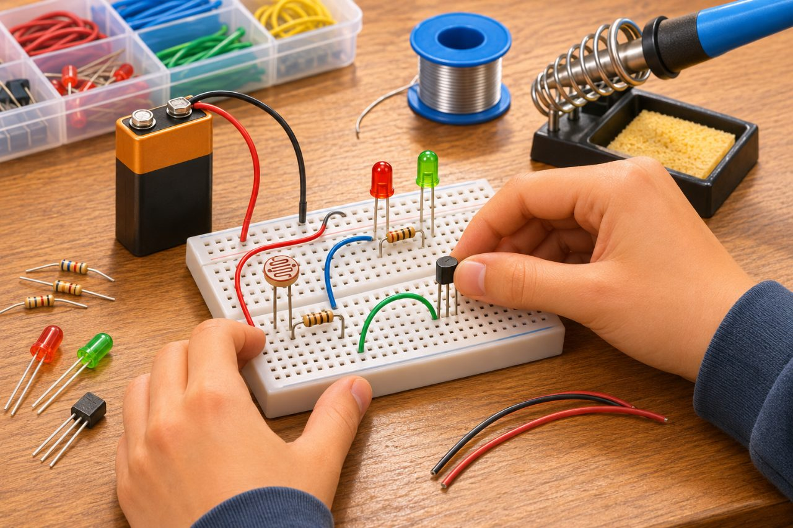

Ein Bauteil mit drei Anschlüssen

Denk mal nach: Jonas baut eine Schaltung auf einer Steckplatine (einem Brett mit vielen Steckkontakten). Gerade steckt er ein kleines schwarzes Bauteil mit drei Beinen ein. Was kann dieses Bauteil?
Es ist ein . Heute gibt es kaum ein elektronisches Gerät ohne Transistoren: Sie stecken im Radio, im Fernseher, im Computer und im Smartphone.
Ein Transistor ist ein elektronisches Bauteil mit drei Anschlüssen. Sie heißen (C), (B) und (E).
Ein Transistor hat zwei Aufgaben: Er arbeitet als Schalter oder als .
Transistoren gibt es in vielen Bauformen: im Metallgehäuse, im Plastikgehäuse mit drei Beinen oder als winzige auf einer .
Der Transistor war eine so wichtige Erfindung, dass drei Forscher aus den USA dafür 1956 den für Physik bekamen.
MERKE
- Ein Transistor ist ein elektronisches Bauteil mit drei Anschlüssen: Kollektor (C), Basis (B) und Emitter (E).
- Ein Transistor kann als Schalter oder als Verstärker arbeiten.
- Es gibt viele Bauformen: Metallgehäuse, Plastikgehäuse mit drei Beinen, winzige SMD-Bauteile. Heute gibt es kaum ein elektronisches Gerät ohne Transistoren.
Das Schaltzeichen des Transistors
Was ist ein Transistor?
Tippe zuerst auf eine Lücke, dann auf das passende Wort. Zwei Wörter bleiben übrig.
Das Wassermodell
Denk an einen Wasserhahn: Mit einer kleinen Drehung am Griff steuerst du einen kräftigen Wasserstrahl.
Beim Transistor ist die Basis der Griff. Ein kleiner Strom an der Basis gibt einen großen Strom zwischen Kollektor und Emitter frei – oder er sperrt ihn.
Noch genauer zeigt es ein Wassermodell mit zwei Kanälen. In jedem Kanal sitzt eine .
Die kleine Klappe sitzt im schmalen Kanal von B nach E. Die große Klappe sitzt im breiten Kanal von C nach E. Beide Klappen sind fest miteinander verbunden.
Der Transistor als Verstärker
Ein Mikrofon liefert nur ein sehr schwaches elektrisches Signal. Damit kann man keinen Lautsprecher betreiben. Deshalb liegt das Mikrofon im eines Transistors. Sein schwacher Strom steuert einen viel stärkeren Strom im – mit genau derselben Form.
Je Transistor ist dieser Strom etwa 100-mal so groß. Verstärker haben meist mehrere solche Stufen hintereinander. Dann reicht es sogar für eine Konzerthalle. Probiere es im Labor aus (mA heißt Milliampere, ein Tausendstel Ampere).
Wähle einen Versuch. Beobachte beide Messgeräte. Die Ergebnisse erscheinen in der Tabelle.
| Versuch | Strom im Steuerstromkreis (Mikrofon) | Strom im Arbeitsstromkreis (Lautsprecher) | Was hörst du? |
|---|
MERKE
- Wassermodell: Die kleine Klappe steuert einen kleinen Wasserstrom von B nach E. Sie ist fest mit der großen Klappe verbunden. Öffnet sich die kleine Klappe, öffnet sich auch die große: Viel Wasser fließt von C nach E.
- Beim Transistor ist es genauso: Ein kleiner Strom über Basis und Emitter (Steuerstromkreis) steuert einen großen Strom über Kollektor und Emitter (Arbeitsstromkreis).
- Als Verstärker macht der Transistor aus einem schwachen Signal ein starkes. Je Stufe wird der Strom etwa 100-mal so groß.
Wassermodell und Transistor
Tippe links einen Teil des Wassermodells an und rechts das, was ihm beim Transistor entspricht.
Erkläre in eigenen Worten ✨ KI prüft
Schreibe ganze Sätze oder Stichpunkte. Die KI achtet nur auf den Inhalt, nicht auf die Rechtschreibung.
Steuerstromkreis und Arbeitsstromkreis
In jeder Transistorschaltung gibt es zwei Stromkreise:
- Steuerstromkreis über Basis und Emitter: Hier fließt ein kleiner Strom. Er steuert.
- Arbeitsstromkreis über Kollektor und Emitter: Hier fließt der große Strom. Er bringt eine Lampe, einen Summer oder einen Lautsprecher zum Arbeiten.
Am Emitter treffen sich beide Stromkreise.
Der Transistor als Schalter: Erinnerst du dich an den aus Modul 2? Je heller es ist, desto kleiner ist sein . Im Dunkeln ist er groß.
In einer liegt der LDR im Steuerstromkreis. Wird es am LDR dunkel, steigt die zwischen Basis und Emitter. Erst wenn sie mehr als 0,6 V beträgt, fließt genug Strom durch die Basis. Dann schaltet der Transistor den Arbeitsstromkreis ein.
Schiebe den Regler oder tippe auf die Knöpfe. Beobachte die Spannung zwischen Basis und Emitter – und die Lampe.
| Licht am LDR | Widerstand des LDR | Spannung zwischen Basis und Emitter | Transistor | Lampe |
|---|
MERKE
- Eine Transistorschaltung hat zwei Stromkreise: den Steuerstromkreis über Basis und Emitter und den Arbeitsstromkreis über Kollektor und Emitter.
- Als Schalter: Erst wenn die Spannung zwischen Basis und Emitter mehr als 0,6 V beträgt, schaltet der Transistor den Arbeitsstromkreis ein.
- Lichtschranke: Wird der Lichtstrahl unterbrochen, wird es am LDR dunkel. Sein Widerstand wird groß, die Spannung an der Basis steigt über 0,6 V – die Lampe geht an.
Was passiert in der Lichtschranke?
Bringe die Schritte mit den Pfeilen in die richtige Reihenfolge.
Welcher Stromkreis?
Tippe eine Karte an und dann den passenden Bereich.
Erkläre in eigenen Worten ✨ KI prüft
Schreibe ganze Sätze oder Stichpunkte. Die KI achtet nur auf den Inhalt, nicht auf die Rechtschreibung.
Schaltungen entwerfen
In einem steht für jedes Bauteil ein . Dabei gelten Regeln:
- Leitungen sind gerade – nur waagerecht oder senkrecht.
- Ein dicker Punkt heißt: Hier sind Leitungen verbunden.
- Kreuzen sich zwei Leitungen ohne Punkt, sind sie nicht verbunden.
- Die Spannungsquelle (z. B. eine Batterie) hat zwei Pole. Ihre Spannung muss zu den Bauteilen passen.
- Nur ein geschlossener Stromkreis funktioniert.
Vom Plan zur Schaltung: Als Grundplatte nimmst du zwei bis drei Lagen Pappe, fest verklebt, oder Sperrholz. Ordne die Bauteile so an wie im Plan und halte die Drähte mit Reißnägeln fest. Statt zu löten, kannst du nehmen.
Schaltungen abwandeln: Ein statt der Lampe macht aus der Lichtschranke eine Alarmanlage. Eine LED mit Schutzwiderstand geht auch. Mit einem Heißleiter statt des LDR geht die Lampe an, wenn es kalt wird.
Schaltzeichen erkennen
Schaltplan-Bauer: eine Alarmanlage mit Lichtschranke
Die Alarmanlage soll piepen, sobald jemand durch den Lichtstrahl läuft. Setze die Bauteile in die Lücken des Schaltplans: Tippe zuerst auf ein Bauteil unter dem Plan, dann auf die passende Lücke. Zwei Bauteile bleiben übrig.
Tipp: Der Lichtstrahl zeigt dir, wo der LDR hingehört. Was piepen soll, liegt im Arbeitsstromkreis über dem Kollektor. Hier versorgt eine einzige Batterie beide Stromkreise – so ist es bei fertigen Schaltungen oft.
Tippe auf ein Bauteil und dann auf eine Lücke. Eine falsch belegte Lücke leerst du durch Antippen.
Der Wechselblinker
Zwei LEDs blinken abwechselnd – wie bei einer Warnleuchte an der Baustelle. Dazu braucht man zwei Transistoren und ein neues Bauteil: den . Er speichert elektrische Energie. Verfolge in der Animation, wie die Schaltung immer wieder umschaltet.
MERKE
- Im Schaltplan hat jedes Bauteil ein Schaltzeichen. Leitungen sind gerade, ein dicker Punkt zeigt eine Verbindung.
- Alarmanlage mit LDR: Wird der Lichtstrahl unterbrochen, schaltet der Transistor den Summer ein. Vertauscht man LDR und Widerstand, piept der Summer, sobald Licht auf den LDR fällt – zum Beispiel, wenn jemand eine dunkle Schublade öffnet.
- Wechselblinker: zwei Transistoren und zwei Kondensatoren. Ein Kondensator speichert elektrische Energie. Mit größeren Kondensatoren blinken die LEDs langsamer.
Schaltpläne und Schaltungen
Training
Löse das Kreuzworträtsel
Tippe in ein Kästchen und schreibe. Tippst du ein Kästchen zweimal an, wechselt die Richtung. Ä schreibst du als AE. Hängst du fest? Bei jeder Frage hilft 💡 Tipp – erst ein Hinweis, dann der Anfangsbuchstabe. Mit 📋 Wörter zeigen siehst du alle Lösungswörter.
Kreuze an
Profi-Check, Lernkarten und Regelheft
Transistoren – Schalter und Verstärker
Ein Transistor ist ein elektronisches Bauteil mit drei Anschlüssen: Kollektor (C), Basis (B) und Emitter (E). Er arbeitet als Schalter oder als Verstärker.
| Steuerstromkreis | Arbeitsstromkreis | |
|---|---|---|
| läuft über | Basis und Emitter | Kollektor und Emitter |
| Strom | klein | groß (je Stufe etwa 100-mal so groß) |
| Beispiele | Mikrofon, Fotowiderstand (LDR) | Lautsprecher, Lampe, Summer |
Wassermodell: Die kleine Klappe (B → E) ist fest mit der großen Klappe (C → E) verbunden. Ein kleiner Wasserstrom öffnet beide → ein großer Wasserstrom fließt.
Schalter: Erst ab 0,6 V zwischen Basis und Emitter schaltet der Transistor den Arbeitsstromkreis ein. Lichtschranke, Alarmanlage: Lichtstrahl unterbrochen → LDR dunkel → Widerstand groß → Spannung an der Basis über 0,6 V → Lampe oder Summer an.
Wechselblinker: zwei Transistoren und zwei Kondensatoren (speichern elektrische Energie) → zwei LEDs blinken abwechselnd.
Wortspeicher
Alle Fachbegriffe dieses Moduls auf einen Blick.
Wie geht es weiter?
Das war das letzte Modul zur Kommunikationstechnik. Wiederhole mit den Lernkarten und den Regelhefteinträgen aller vier Module – vom Mikrofon über Sensoren und Dioden bis zum Transistor. Dann bist du gut vorbereitet für die Probe zur Kommunikationstechnik, sobald deine Lehrkraft sie freischaltet.